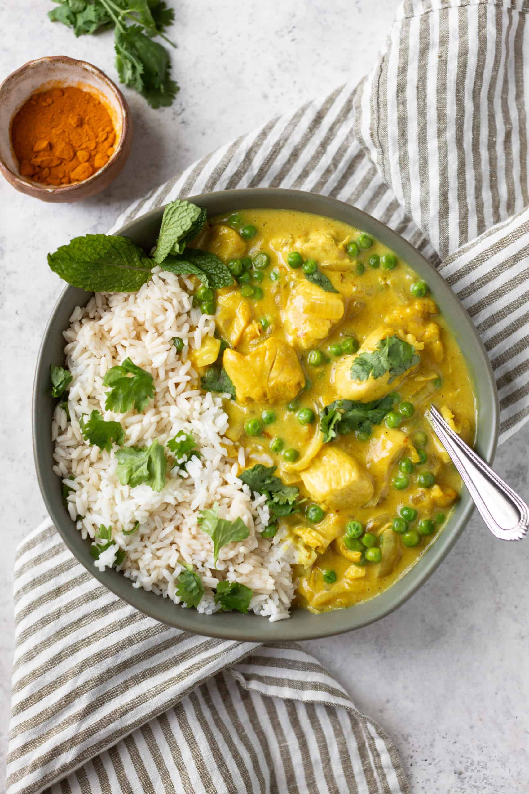
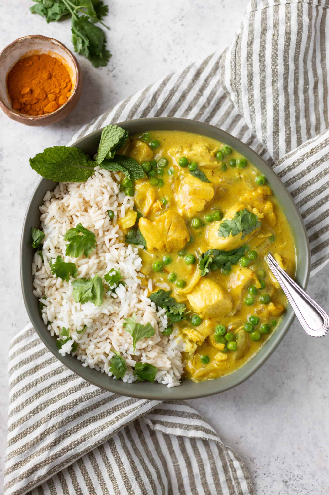

Lasagne are a type of pasta,
possibly one of the oldest types,
made of very wide, flat sheets.
Either term can also refer to an Italian
dish made of stacked layers of lasagne
alternating with fillings
Ingridents:
- 2 tablespoons butter
- 2 tablespoons olive oil
- 1 onion, diced
- 3 cloves garlic, minced
- ½ cup yellow bell pepper, diced
- 1 teaspoon white sugar
- ¼ cup maple syrup
- 2 tablespoons curry paste
- 1 ¼ cups chicken broth
- ½ cup heavy cream
- 4 skinless, boneless chicken breast halves - cut into bite-size pieces
- 3 tablespoons cream cheese
Steps:
- Place butter in a large skillet.
Pour in olive oil and heat over medium-high heat.
Add the onion, garlic, and yellow pepper to the skillet.
Cook and stir until the onion and peppers are soft.
- Sprinkle sugar over onion mixture and cook one minute.
Pour in maple syrup and cook another minute.
Add curry paste and cook another minute.
Pour in chicken broth and cream. Bring to a slow boil,
then simmer on medium-low heat for 15 minutes.
- Meanwhile, in a separate pan,
cook the chicken over medium heat until cooked through on all sides,
about 10 minutes. Stir cooked chicken into the sauce.
Simmer five minutes, then add cream cheese. Simmer another 5 minutes.